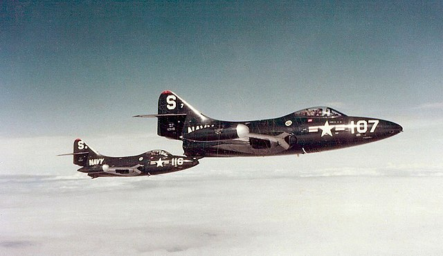

Neil Armstrong
From Wikipedia, the free encyclopedia.
You can find a full article Neil Armstrong, From Wikipedia, the free encyclopedia.
Hi is an author of famous phrase: That's one small step for [a] man, one giant leap for
mankind.
About
Neil Alden Armstrong (August 5, 1930 – August 25, 2012) was an American astronaut and aeronautical engineer, and the first person to walk on the Moon. He was also a naval aviator, test pilot, and university professor.
Early life
Armstrong was born and raised in Wapakoneta, Ohio. A graduate of Purdue University, he studied aeronautical engineering; his college tuition was paid for by the U.S. Navy under the Holloway Plan. He became a midshipman in 1949 and a naval aviator the following year. He saw action in the Korean War, flying the Grumman F9F Panther from the aircraft carrier USS Essex. In September 1951, while making a low bombing run, Armstrong's aircraft was damaged when it collided with an anti-aircraft cable, strung across a valley, which cut off a large portion of one wing. Armstrong was forced to bail out.
Education
After the war, he completed his bachelor's degree at Purdue and became a test pilot at the National Advisory Committee for Aeronautics (NACA) High-Speed Flight Station at Edwards Air Force Base in California. He was the project pilot on Century Series fighters and flew the North American X-15 seven times. He was also a participant in the U.S. Air Force's Man in Space Soonest and X-20 Dyna-Soar human spaceflight programs.
Astronaut career
Armstrong joined the NASA Astronaut Corps in the second group, which was selected in 1962. He made his first spaceflight as command pilot of Gemini 8 in March 1966, becoming NASA's first civilian astronaut to fly in space.
During this mission with pilot David Scott, he performed the first docking of two spacecraft; the mission was aborted after Armstrong used some of his re-entry control fuel to stabilize a dangerous roll caused by a stuck thruster. During training for Armstrong's second and last spaceflight as commander of Apollo 11, he had to eject from the Lunar Landing Research Vehicle moments before a crash.
On July 20, 1969, Armstrong and Apollo 11 Lunar Module (LM) pilot Buzz Aldrin became the first people to land on the Moon, and the next day they spent two and a half hours outside the Lunar Module Eagle spacecraft while Michael Collins remained in lunar orbit in the Apollo Command Module Columbia. When Armstrong first stepped onto the lunar surface, he famously said: "That's one small step for [a] man, one giant leap for mankind." It was broadcast live to an estimated 530 million viewers worldwide. Apollo 11 effectively proved US victory in the Space Race, by fulfilling a national goal proposed in 1961 by President John F. Kennedy "of landing a man on the Moon and returning him safely to the Earth" before the end of the decade.
Along with Collins and Aldrin, Armstrong was awarded the Presidential Medal of Freedom by President Richard Nixon and received the 1969 Collier Trophy. President Jimmy Carter presented him with the Congressional Space Medal of Honor in 1978, he was inducted into the National Aviation Hall of Fame in 1979, and with his former crewmates received the Congressional Gold Medal in 2009.
After he resigned from NASA in 1971, Armstrong taught in the Department of Aerospace Engineering at the University of Cincinnati until 1979. He served on the Apollo 13 accident investigation and on the Rogers Commission, which investigated the Space Shuttle Challenger disaster. In 2012, Armstrong died due to complications resulting from coronary bypass surgery, at the age of 82.